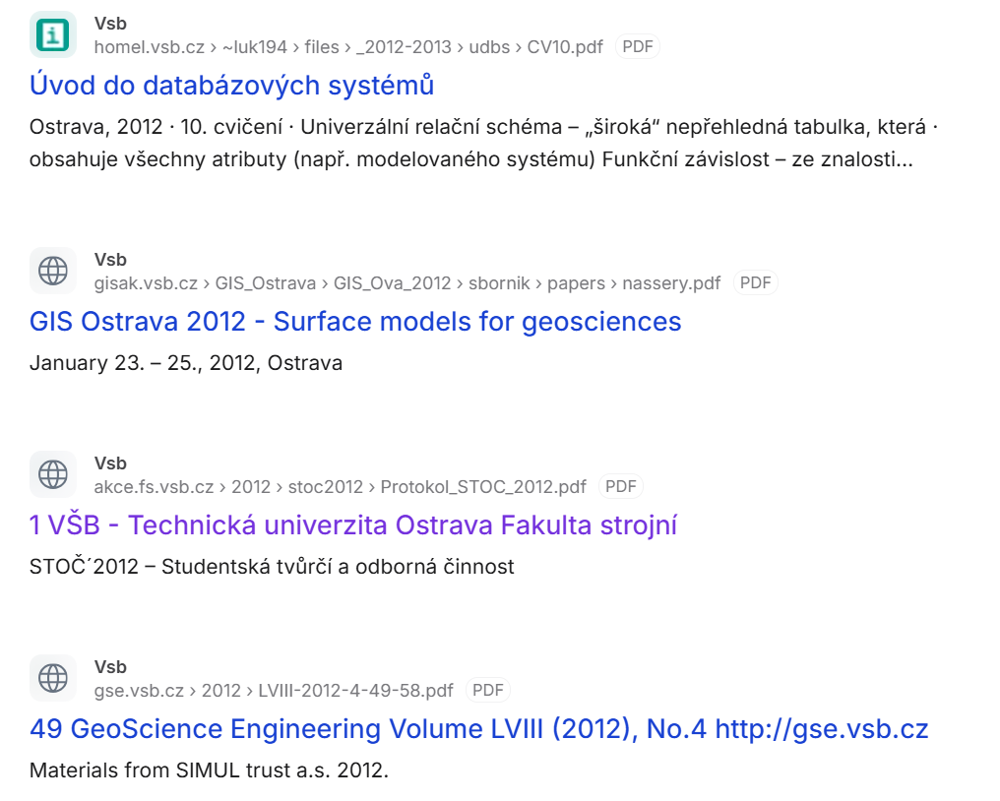
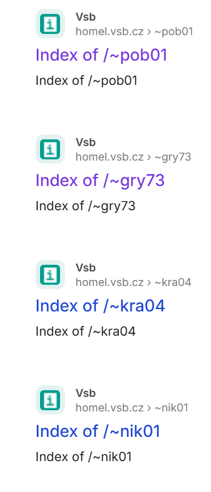
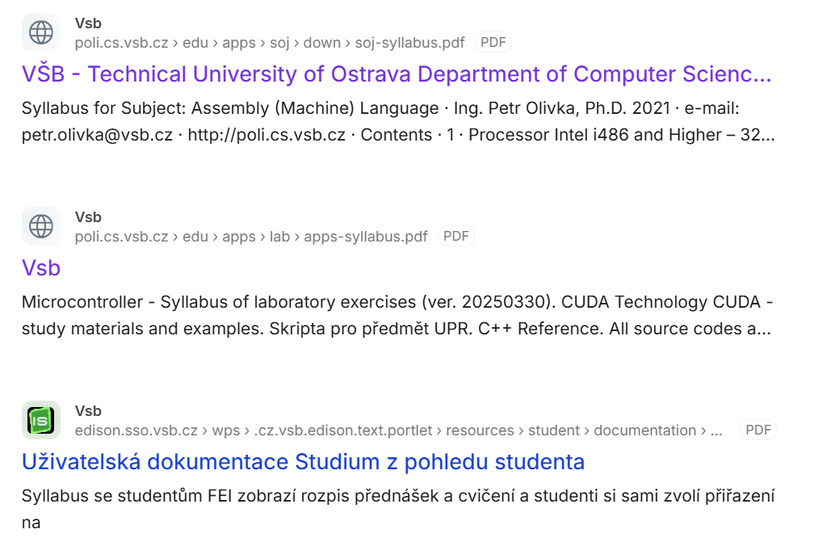
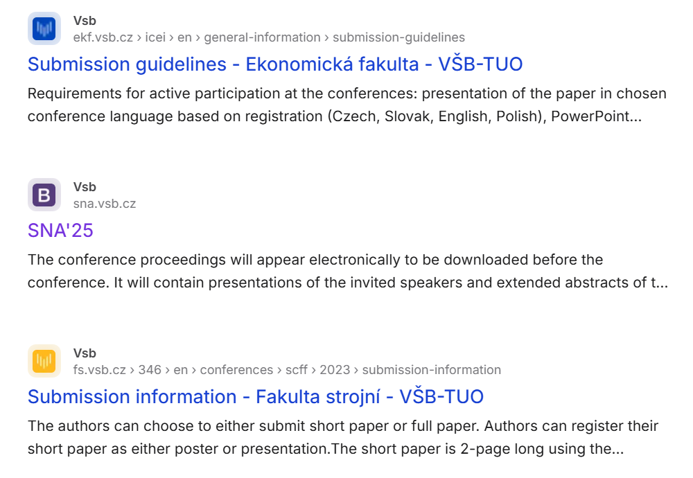
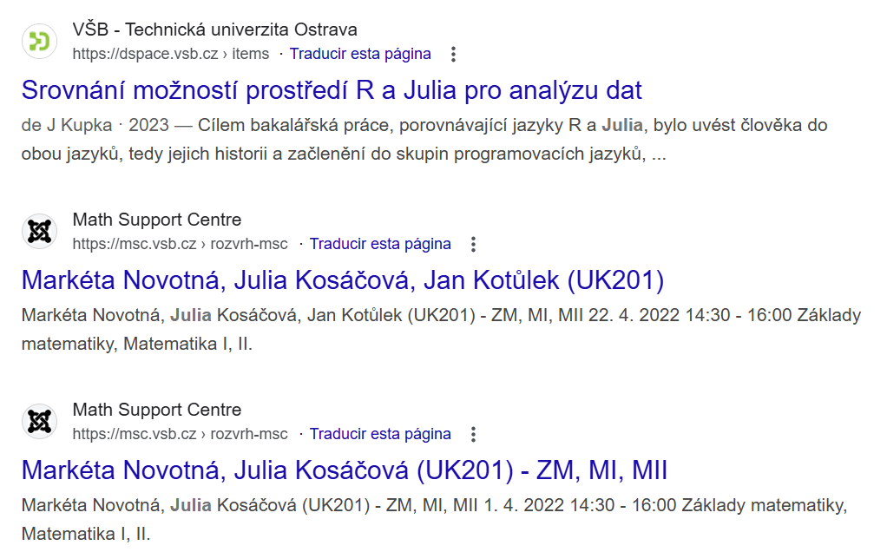

Introduction
In the field of communications security, one of the fundamental ideas is the evaluation of public exposure of information. Although threats are typically associated with active attacks, a critical part of cybersecurity is analyzing what sensitive information is accidentally exposed.
Within the course, the concept of Google Hacking (Google Dorking) is studied as an OSINT technique that allows identifying risks such as loss of confidentiality, decreased integrity, availability issues, and poor configuration in communicating systems.
Note: Google Hacking is not an attack — it's a passive audit technique based on advanced search engine operators. When used properly it is legal and commonly used by security personnel to discover exposures.
Fundamental concepts
The following principles help guide audits using Google Dorking:
- Confidentiality: Ensure personal and internal data aren't publicly accessible.
- Integrity: Keep public information correct, current, and unique.
- Security through visibility: Observe public data to decide defensive measures.
- Least exposure principle: Publish only the minimal necessary information.
1. Confidentiality
Google auditing reveals public documents containing personal or internal data, backup files, credentials, or misconfigured admin pages. Finding and removing these exposures protects confidentiality.
2. Integrity
Auditing locates out-of-date indexed documents, cached pages, and duplicates that damage trust in public information.
3. Visibility-based security
Maps files, directories, subdomains and orphan resources. This eliminates blind spots and enables proactive defense.
4. Least exposure principle
Identifies excessive metadata and technical details that reveal attack surface — the less exposed, the smaller the surface.
5. Index control
Check robots.txt, noindex directives and indexing behavior to ensure sensitive paths are not discoverable by search engines.
6. Data lifecycle hygiene
Locate outdated reports, retired systems and leftover artifacts that should be archived or deleted to reduce long-term risk.
Google hacking
Google Dorking uses advanced operators to find specific strings in indexed content. Operators include:
filetype: — search for file types (e.g. filetype:pdf).inurl: — match terms in URLs (e.g. inurl:login).intext: — search page text (e.g. intext:"password").intitle: — search page titles (e.g. intitle:"index of").link: — find pages linking to a URL (e.g. link:example.com).site: — restrict search to a domain (e.g. site:example.com).
These operators can reveal misconfigured services, configuration files, credentials, and other sensitive information that may have been accidentally indexed.
Examples
Below are example dorks:
| Google dork command |
Details |
| site:vsb.cz "2012" filetype:pdf |
Details
Description: Finds PDF documents containing “2012”.
Cybersecurity application: Helps find old documents that may expose outdated systems.

|
| site:vsb.cz intitle:"index of" |
Details
Description: Locates visible directory listings.
Cybersecurity application: Detects misconfigured servers exposing files.

|
| site:vsb.cz "syllabus" filetype:pdf |
Details
Description: Finds PDF study plans.
Cybersecurity application: Can reveal software versions, teacher contacts or system info.

|
| site:vsb.cz "conference" filetype:ppt |
Details
Description: Finds conference presentations.
Cybersecurity application: Sometimes contains diagrams, infrastructures or internal details.

|
| site:vsb.cz filetype:pdf "international" |
Details
Description: Finds PDFs mentioning “international”.
Cybersecurity application: May reveal public agreements, contacts or exposed processes.
|
| site:fei.vsb.cz filetype:pdf "lab" |
Details
Description: Finds lab-related PDFs.
Cybersecurity application: May expose default credentials, network diagrams or configurations.
|
| site:vsb.cz "Julia" |
Details
Description: Finds public mentions of the name “Julia”.
Cybersecurity application: Helps audit personal data exposure (PII).

|
Main dangers of Google hacking
While useful, Google Dorking can expose passwords, credentials, private documents, and infrastructure weaknesses. This can lead to privacy violations, identity theft, espionage, and targeted attacks if misused.
Ethical and legal considerations must guide its use — improper use may violate laws or terms of service.
Prevent Google dorking
- Restrict information: Avoid publishing sensitive data and protect files.
- Robust robots.txt: Configure robots.txt to disallow sensitive paths (note: robots.txt is advisory only).
- NoIndex / NoFollow: Use meta tags or headers to prevent indexing when appropriate.
- Regular audits: Run periodic scans (including safe Google Dorking) to find exposures.
- Limit permissions: Ensure correct file and directory permissions.
- Security tooling: Use firewalls, WAFs and monitoring to detect abuse.
Conclusion
Google Hacking demonstrates how much information can be found using search engines. When used properly it is a valuable defensive tool for researchers, students, and security professionals — helping to find exposed files, stale documents, and misconfigurations that should be fixed.
Effective cybersecurity mixes technical controls with awareness and good information hygiene.
References (APA 7th edition)
- The Knowledge Academy. (n.d.). Google Dorking. The Knowledge Academy Blog. Retrieved December 2, 2025, from https://www.theknowledgeacademy.com/blog/google-dorking/
- Imperva. (n.d.). Google Dorking (Hacking). Imperva Learning Center. Retrieved December 2, 2025, from https://www.imperva.com/learn/application-security/google-dorking-hacking/
- Wikipedia contributors. (n.d.). Google Hacking. In Wikipedia. Retrieved December 2, 2025, from https://es.wikipedia.org/wiki/Google_Hacking
- StationX. (n.d.). Google Dorks Cheat Sheet. StationX Blog. Retrieved December 2, 2025, from https://www.stationx.net/google-dorks-cheat-sheet/